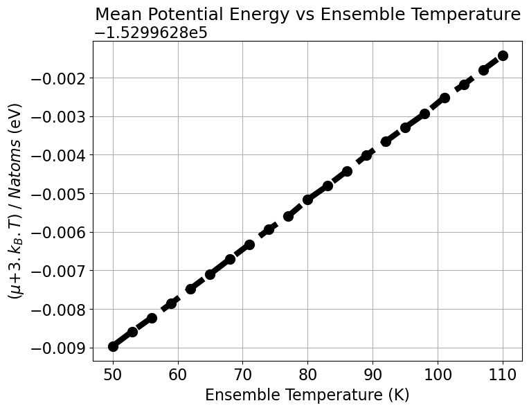
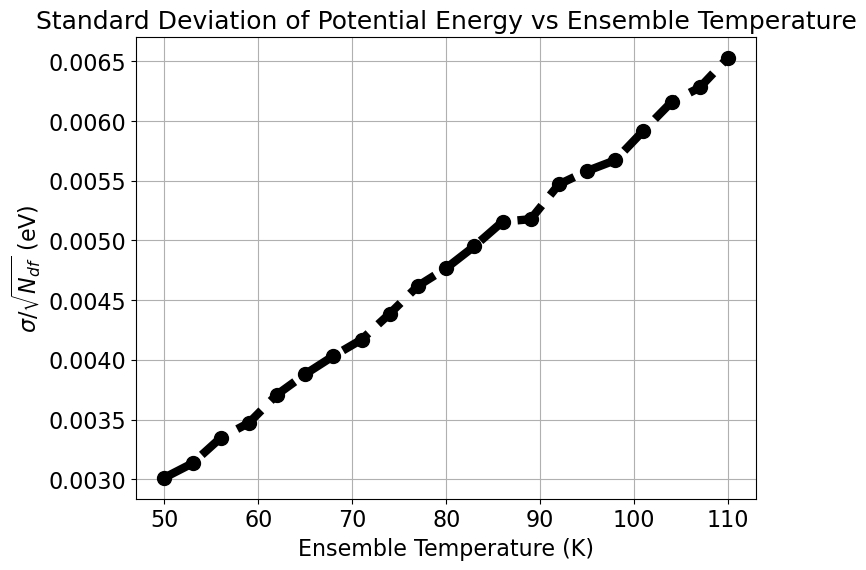

Temperature spacing for replica exchange molecular dynamics simulations
This notebooks is to generate the temperature spacing for efficeint swaping in replica exchange molecular dynamics method.
[1]:
import os
import numpy as np
import matplotlib.pyplot as plt
from scipy.stats import linregress
[2]:
# Set global parameters
plt.rcParams['figure.figsize'] = (8, 6) # Figure size in inches (width, height)
# plt.rcParams['figure.dpi'] = 150 # Figure resolution in dots per inch
plt.rcParams['font.family'] = 'sans-serif' # Font family
plt.rcParams['font.sans-serif'] = 'Fira Sans'
plt.rcParams['font.size'] = 16 # Font size
plt.rcParams['axes.labelsize'] = 10 # Font size of x and y labels
plt.rcParams['axes.titlesize'] = 18 # Font size of title
plt.rcParams['axes.grid'] = True # Show grid by default
plt.rcParams['lines.linewidth'] = 6 # Line width
plt.rcParams['lines.markersize'] = 10 # Marker size
plt.rcParams['legend.fontsize'] = 16 # Font size of legend
import logging
logging.getLogger('matplotlib.font_manager').setLevel(logging.ERROR)
[3]:
# change the working directory where you have i-pi generated short remd data
os.chdir('./short_remd_coefficient_search/')
[4]:
# one needs to sort the output from i-pi in accordance with the temperature
# !python3 remdsort.py input_remd.xml
[5]:
# Reading all the outputs of the replicas
properties = {}
for file in os.listdir():
if file.endswith("_simulation.out") & file.startswith("SRT"):
idx = int(file.split('_')[1])
data = np.loadtxt(file)
properties[idx] = data
else :
continue
properties = {k: v for k, v in sorted(properties.items(), key=lambda item: item[0])}
Deriving the constants for temperature spacing alorigthm
[6]:
# Constants
kb = 8.617333262145e-5 # Boltzmann constant in eV/K
Natoms = 27 # 3x3 1H-TaS2 supercell
Ndf = 3*Natoms-3 # degrees of freedom
Using last 10ps of trajectory to compute ensemble averages
[7]:
avg_potentials = np.array([np.mean(v[-10000:,6]) for k, v in properties.items()])
ensemble_temps = np.array([np.mean(v[-10000:,9]) for k, v in properties.items()])
observed_temps = np.array([np.mean(v[-10000:,3]) for k, v in properties.items()])
std_potentials = np.array([np.std(v[-10000:,6]) for k, v in properties.items()])/np.sqrt(Ndf)
[8]:
print(f'Ensemble temperatures: {ensemble_temps}\n')
print(f'Observed temperatures: {observed_temps}')
Ensemble temperatures: [ 50. 53. 56. 59. 62. 65. 68. 71. 74. 77. 80. 83. 86. 89.
92. 95. 98. 101. 104. 107. 110.]
Observed temperatures: [ 50.26108535 53.20330219 56.25668929 59.20290569 62.27423155
65.17519428 67.91214192 71.20242199 74.01436144 76.92244628
79.98700373 82.81899827 85.86762277 88.79839426 91.50337063
94.81545514 97.99874072 100.58586705 103.75503566 106.71843229
109.8139592 ]
Computing constants:
\(\mu\) = \((B_{0} + B_{1}.T)N_{atoms}\) - \(3.k_{B}.T\)
\(\sigma\) = \((D_{0} + D_{1}.T)\sqrt{N_{df}}\)
[9]:
scaled_avg_potentials = (avg_potentials + 3 * kb * ensemble_temps)/Natoms
plt.figure()
plt.title('Mean Potential Energy vs Ensemble Temperature')
plt.plot(ensemble_temps, scaled_avg_potentials ,'o--', color = 'k')
plt.xlabel('Ensemble Temperature (K)')
plt.ylabel(r'($\mu$+$3.k_{B}.T$) / $Natoms$ (eV)')
slope, intercept, r_value, p_value, std_err = linregress(ensemble_temps, scaled_avg_potentials)
B0, B1 = intercept, slope
print(f'Slope B_1: {slope} eV/K, Intercept B_0: {intercept} eV, R-squared: {r_value**2}')
plt.show()
Slope B_1: 0.0001261751193934205 eV/K, Intercept B_0: -152996.29528628185 eV, R-squared: 0.9999451545563839

[10]:
plt.figure()
plt.title('Standard Deviation of Potential Energy vs Ensemble Temperature')
plt.plot(ensemble_temps, std_potentials ,'o--', color = 'k')
plt.xlabel('Ensemble Temperature (K)')
plt.ylabel(r'$\sigma$/$\sqrt{N_{df}}$ (eV)')
slope, intercept, r_value, p_value, std_err = linregress(ensemble_temps, std_potentials)
D0, D1 = intercept, slope
print(f'Slope D_1: {slope} eV/K, Intercept D_0: {intercept} eV, R-squared: {r_value**2}')
plt.show()
Slope D_1: 5.800812914842667e-05 eV/K, Intercept D_0: 9.350154882901713e-05 eV, R-squared: 0.998153170144406

Acceptance probability
Mean and std. deviation for difference in potential energy
\(\mu_{12} = B_{1}(T_{2}-T_{1})N_{atoms} - 3k_{B}(T_{2}-T_{1})\)
\(\sigma_{12} = D_{1}(T_{2}-T_{1})\sqrt{N_{df}}\)
[11]:
import numpy as np
from scipy.special import erf
from scipy.optimize import root_scalar
class ComputeTempSpacings:
def __init__(self, B0, B1, D0, D1, T1, Natoms, Ndf, kb):
self.B0 = B0
self.B1 = B1
self.D0 = D0
self.D1 = D1
self.T1 = T1
self.Natoms = Natoms
self.Ndf = Ndf
self.kb = kb
def mu(self, T2):
return self.B1 * (T2 - self.T1) * self.Natoms - 3 * self.kb * (T2 - self.T1)
def sigma(self, T2):
return self.D1 * np.sqrt(self.Ndf) * (T2 - self.T1)
def C(self, T2):
return 1/(self.kb * T2) - 1/(self.kb * self.T1)
def prob(self, T2):
mu_val = self.mu(T2)
sigma_val = self.sigma(T2)
C_val = self.C(T2)
# for numerical stability we use log probabilities
log_one = np.log(0.5) + np.log1p(erf(-mu_val / (np.sqrt(2) * sigma_val)))
log_second = np.log(0.5) + C_val * mu_val + (C_val**2 * sigma_val**2) / 2
log_third = np.log1p(erf((mu_val + C_val * sigma_val**2) / np.sqrt(2 * sigma_val**2)))
log_prob = np.logaddexp(log_one, log_second + log_third)
return np.exp(log_prob)
def find_T2(self, target_prob, T2_guess_low, T2_guess_high):
def equation(T2):
return self.prob(T2) - target_prob
solution = root_scalar(equation, bracket=[T2_guess_low, T2_guess_high], method='brentq')
if solution.converged:
return solution.root
else:
raise ValueError("Solution did not converge")
[13]:
Natoms = 1404 # This need to be changed for required system; here (6xroot13) 1T-TaS2 supercell
Ndf = 3*Natoms-3 # degrees of freedom
B0, B1, D0, D1 = B0, B1, D0, D1
T1, T_final = 50, 150 # initial and final temperatures
target_prob = 0.25 # target acceptance probability for swapping (T1-T2)
T2 = 0 # just a placeholder
T1s, T2s, delta_Ts = [], [], []
print(f"Total number of atoms: {Natoms}")
print(f"Degrees of freedom: {Ndf}")
print(f"Values of constants: B0={B0} eV, B1={B1} eV/K, D0={D0} eV, D1={D1} eV/K")
print(f"Inital temperature: {T1} K\tFinal temperature: {T_final} K")
print(f"Target acceptance probability for swapping (T1-T2): {target_prob}\n")
Total number of atoms: 1404
Degrees of freedom: 4209
Values of constants: B0=-152996.29528628185 eV, B1=0.0001261751193934205 eV/K, D0=9.350154882901713e-05 eV, D1=5.800812914842667e-05 eV/K
Inital temperature: 50 K Final temperature: 150 K
Target acceptance probability for swapping (T1-T2): 0.25
[14]:
# change the directory where you want to save the temperature spacing search log
os.chdir('/classical_remd/')
print("Starting temperature spacing search...")
with open('temperature_spacing_search.log', 'w') as f:
f.write(f"Total number of atoms: {Natoms}\n")
f.write(f"Degrees of freedom: {Ndf}\n")
f.write(f"Values of constants: B0={B0} eV, B1={B1} eV/K, D0={D0} eV, D1={D1} eV/K\n")
f.write(f"Inital temperature: {T1} K\tFinal temperature: {T_final} K\n")
f.write(f"Target acceptance probability for swapping (T1-T2): {target_prob}\n\n")
while T2 < T_final:
model = ComputeTempSpacings(B0, B1, D0, D1, T1, Natoms, Ndf, kb)
try:
T2 = model.find_T2(target_prob, T1, 1000)
T1s.append(T1)
T2s.append(T2)
delta_Ts.append(T2 - T1)
print(f"Acceptance probability: {model.prob(T2):.2f}\tT1: {T1:.2f} K\tT2: {T2:.2f} K\tDelta T: {T2 - T1:.2f} K")
f.write(f"Acceptance probability: {model.prob(T2):.2f}\tT1: {T1:.2f} K\tT2: {T2:.2f} K\tDelta T: {T2 - T1:.2f} K\n")
except ValueError as e:
print(e)
T1 = T2
Starting temperature spacing search...
Acceptance probability: 0.25 T1: 50.00 K T2: 51.32 K Delta T: 1.32 K
Acceptance probability: 0.25 T1: 51.32 K T2: 52.67 K Delta T: 1.35 K
Acceptance probability: 0.25 T1: 52.67 K T2: 54.05 K Delta T: 1.39 K
Acceptance probability: 0.25 T1: 54.05 K T2: 55.48 K Delta T: 1.42 K
Acceptance probability: 0.25 T1: 55.48 K T2: 56.94 K Delta T: 1.46 K
Acceptance probability: 0.25 T1: 56.94 K T2: 58.44 K Delta T: 1.50 K
Acceptance probability: 0.25 T1: 58.44 K T2: 59.98 K Delta T: 1.54 K
Acceptance probability: 0.25 T1: 59.98 K T2: 61.56 K Delta T: 1.58 K
Acceptance probability: 0.25 T1: 61.56 K T2: 63.18 K Delta T: 1.62 K
Acceptance probability: 0.25 T1: 63.18 K T2: 64.84 K Delta T: 1.66 K
Acceptance probability: 0.25 T1: 64.84 K T2: 66.55 K Delta T: 1.71 K
Acceptance probability: 0.25 T1: 66.55 K T2: 68.30 K Delta T: 1.75 K
Acceptance probability: 0.25 T1: 68.30 K T2: 70.10 K Delta T: 1.80 K
Acceptance probability: 0.25 T1: 70.10 K T2: 71.94 K Delta T: 1.85 K
Acceptance probability: 0.25 T1: 71.94 K T2: 73.84 K Delta T: 1.89 K
Acceptance probability: 0.25 T1: 73.84 K T2: 75.78 K Delta T: 1.94 K
Acceptance probability: 0.25 T1: 75.78 K T2: 77.78 K Delta T: 2.00 K
Acceptance probability: 0.25 T1: 77.78 K T2: 79.83 K Delta T: 2.05 K
Acceptance probability: 0.25 T1: 79.83 K T2: 81.93 K Delta T: 2.10 K
Acceptance probability: 0.25 T1: 81.93 K T2: 84.09 K Delta T: 2.16 K
Acceptance probability: 0.25 T1: 84.09 K T2: 86.30 K Delta T: 2.21 K
Acceptance probability: 0.25 T1: 86.30 K T2: 88.57 K Delta T: 2.27 K
Acceptance probability: 0.25 T1: 88.57 K T2: 90.90 K Delta T: 2.33 K
Acceptance probability: 0.25 T1: 90.90 K T2: 93.30 K Delta T: 2.39 K
Acceptance probability: 0.25 T1: 93.30 K T2: 95.75 K Delta T: 2.46 K
Acceptance probability: 0.25 T1: 95.75 K T2: 98.28 K Delta T: 2.52 K
Acceptance probability: 0.25 T1: 98.28 K T2: 100.86 K Delta T: 2.59 K
Acceptance probability: 0.25 T1: 100.86 K T2: 103.52 K Delta T: 2.66 K
Acceptance probability: 0.25 T1: 103.52 K T2: 106.25 K Delta T: 2.73 K
Acceptance probability: 0.25 T1: 106.25 K T2: 109.04 K Delta T: 2.80 K
Acceptance probability: 0.25 T1: 109.04 K T2: 111.91 K Delta T: 2.87 K
Acceptance probability: 0.25 T1: 111.91 K T2: 114.86 K Delta T: 2.95 K
Acceptance probability: 0.25 T1: 114.86 K T2: 117.89 K Delta T: 3.02 K
Acceptance probability: 0.25 T1: 117.89 K T2: 120.99 K Delta T: 3.10 K
Acceptance probability: 0.25 T1: 120.99 K T2: 124.18 K Delta T: 3.19 K
Acceptance probability: 0.25 T1: 124.18 K T2: 127.45 K Delta T: 3.27 K
Acceptance probability: 0.25 T1: 127.45 K T2: 130.80 K Delta T: 3.36 K
Acceptance probability: 0.25 T1: 130.80 K T2: 134.25 K Delta T: 3.44 K
Acceptance probability: 0.25 T1: 134.25 K T2: 137.78 K Delta T: 3.53 K
Acceptance probability: 0.25 T1: 137.78 K T2: 141.41 K Delta T: 3.63 K
Acceptance probability: 0.25 T1: 141.41 K T2: 145.13 K Delta T: 3.72 K
Acceptance probability: 0.25 T1: 145.13 K T2: 148.95 K Delta T: 3.82 K
Acceptance probability: 0.25 T1: 148.95 K T2: 152.87 K Delta T: 3.92 K
/tmp/ipykernel_15522/1430485309.py:31: RuntimeWarning: invalid value encountered in double_scalars
log_one = np.log(0.5) + np.log1p(erf(-mu_val / (np.sqrt(2) * sigma_val)))
/tmp/ipykernel_15522/1430485309.py:33: RuntimeWarning: invalid value encountered in double_scalars
log_third = np.log1p(erf((mu_val + C_val * sigma_val**2) / np.sqrt(2 * sigma_val**2)))
/tmp/ipykernel_15522/1430485309.py:35: RuntimeWarning: invalid value encountered in logaddexp
log_prob = np.logaddexp(log_one, log_second + log_third)
/tmp/ipykernel_15522/1430485309.py:31: RuntimeWarning: divide by zero encountered in log1p
log_one = np.log(0.5) + np.log1p(erf(-mu_val / (np.sqrt(2) * sigma_val)))
/tmp/ipykernel_15522/1430485309.py:33: RuntimeWarning: divide by zero encountered in log1p
log_third = np.log1p(erf((mu_val + C_val * sigma_val**2) / np.sqrt(2 * sigma_val**2)))
[15]:
print(np.asarray(T2s).shape)
(43,)